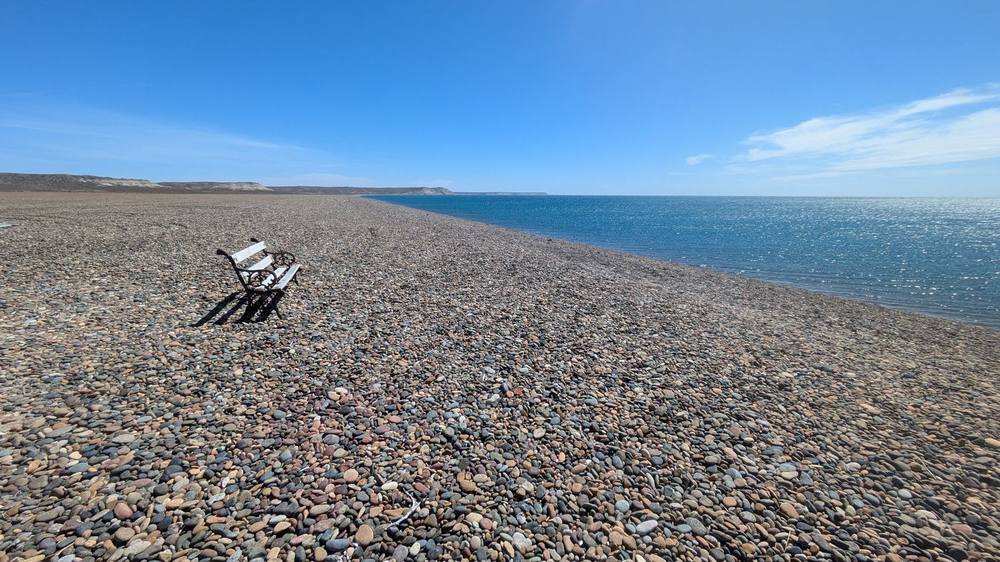
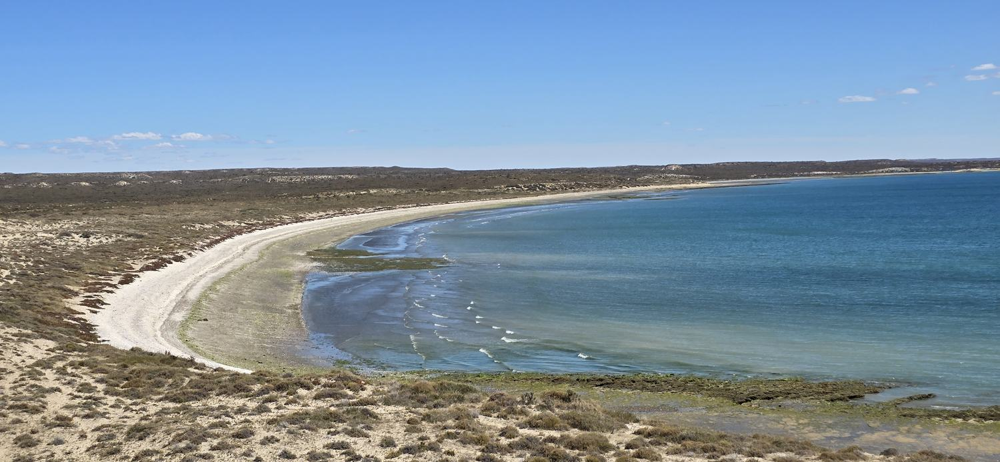
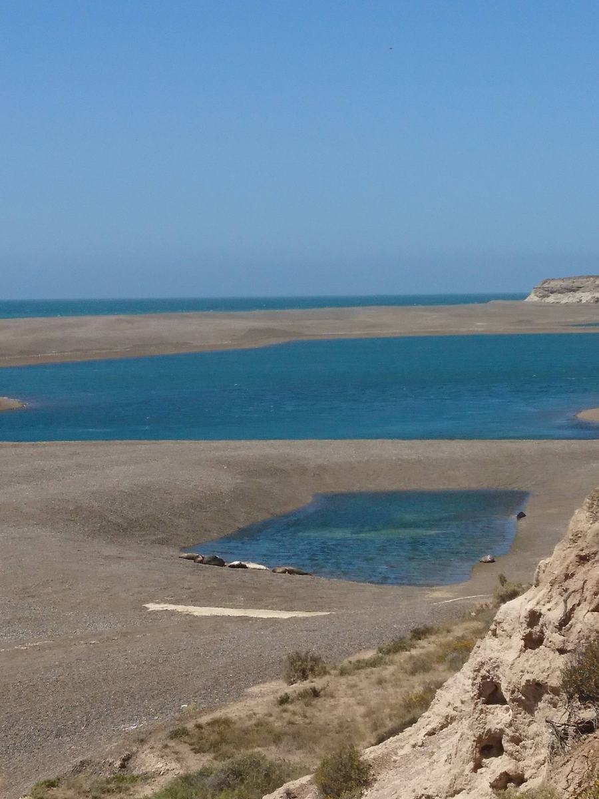
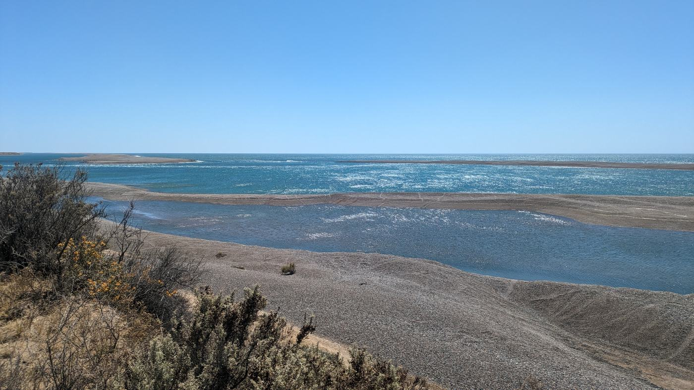

Medio dia para diferenciar playas de arena y de grava, con una caminata corta y opcion de cierre en una cerveceria artesanal. Ideal si no haces la salida larga completa.




Medio dia, grupo reducido, guia personalizado. Ideal si no haces la salida completa de 4 dias a Valdes.